Octane Number
Nel motore ad accensione comandata a iniezione indiretta o alimentato a carburatore, il pistone aspira una miscela di combustibile e di aria comburente dentro il cilindro nella corsa iniziale verso il punto morto inferiore, mentre la comprime ritornando al punto morto superiore (cielo del cilindro). Poco prima che la fase di compressione abbia termine, la candela infiamma la miscela provocando una combustione regolare che respinge il pistone, riavviando il ciclo. Non tutte le benzine, però, bruciano nella stessa misura. Se il carburante è troppo detonante si accende spontaneamente, dando luogo al fenomeno noto colloquialmente come "battito in testa", che provocando diffusione di forze irregolari all'interno del motore ne causa il danneggiamento (per esempio forature dei pistoni, delle teste e danneggiamento delle sedi valvola).
Il numero di ottano è un parametro usato comunemente per la benzina, perché ne misura la resistenza alla detonazione: se il carburante ha un valore basso di ottano, è molto detonante e fa “battere in testa” il motore, mentre se ne ha uno alto è "super".
Knocking is the premature, pressure-caused, spontaneous ignition of the fuel in the engine cylinders, before the spark plug ignites it. The ignition causes counterpressure on the cylinder during the upstroke of the piston. The result is a loud "knock" and inefficient engine performance. The knocking characteristics, or the anti-knocking chraracterics (resistance to knocking) of a fuel cannot be defined in absolute terms. Thus to classify fuels according to their knocking property, an arbitrary scale (edger 1926) known as octane rating or octane number was established. A gasoline with high content of straight-chain hydrocarbons is of limited value as an automobile fuel.
It was found that the hydrocarbon isooctane (C8H18), has very good combustion characteristics and exhibits very little tendency to detonate when mixed with air and ignited at high temperatures. Hence its octane number is taken as 100. On the contrary, the straight chain hydrocarbon, n-heptane (C7H16).
Anti-knock value = 100
CH3−CH2−CH2−CH2−CH2−CH2CH3
n-heptane
Antinock value = 0
The octane rating of a particular gasoline is determined by burning it in a standard engine and comparing its knocking properties with those of standard mixture of of isooctane and n-heptane. A gasoline that performs is the same way as a mixture containing 90% isooctane and 10% n-heptane is assigned an octane rating of 90. The straight-run gasoline fraction from the distillation tower has an ocrane rating of between 50 and 55, much too low for today's automobile engines, which require gasoline with a rating of between 87 and 93. The octane rating of gasoline can be increased in three main ways: (1) cracking, (2) catalytic reforming, and (3) the addition of octane enhancers.
Cracking increases the octane rating by increasing the percentage of short-chain hydrocarbons, which in general have higher octane numbers than longer-chain hydrocarbons, e.g. as the length of the hydrocarbon chain decreases from heptane (C7H16) to butane (C4H10), the octane rating increases from 0 to 94.
Branched-chain hydrocarbons have higher octane numbers than the corresponding straight-chain isomers. Benzene, toluene, and the xylenes for example have octane ratings that are greater than 100; these ratings are obtained by comparing a fuel with reference sample containing isooctane (octane number, 100) and known amounts of an octane enhancer.
Thus if a sample of petrol gives as much of knocking as a mixture of 75 parts of isooctane and 25 parts of n-heptane, then its octane number is taken as 75. The octane numbers of some common hydrocarbons are given below:
| Name | Formula | Octane Rating |
|---|---|---|
| Straight-chain hydrocarbons | ||
| n-butane | C4H10 | 94 |
| n-pentane | C5H12 | 62 |
| 2-Methylbutane | 94 | |
| n-hexane | C6H14 | 25 |
| 2-Methylpentane | 73 | |
| 2,2-Dimethylbutane | 92 | |
| n-heptane | C7H16 | 0 |
| 2,3-Dimethylepentane | 90 | |
| 2-Methylpentane | C8H18 | 22 |
| 2,3-Dimethylhexane | 71 | |
| 2,2,4-Trimethylpentane (isooctane) | 100 | |
| Aromatic hydrocarbons | ||
| Benzene | 106 | |
| Toluene | 118 | |
| o-Xylene | 107 | |
| p-Xylene | 116 |
It follows that if the percentage of branched-chain hydrocarbons and aromatic hydrocarbons. This improvement can be achieved by catalytic reforming, a process in which hydrocarbon vapors from straight-run gasoline are heated in the presence of suitable catalyst such as platinum. By this means, n-hexane, e.g. is converted to 2,2-Dimethylbutane
| CH3−CH2−CH2−CH2−CH2−CH3 n-hexane | ⟶ |  2,2-Dimethylbutane |
Alternatively, n-heptane can be converted to toluene by heating heptane to 500 °C to 600 °C at high pressure in the presence of an Re-Pt-Al2O3 catalyst:
| CH3−CH2−CH2−CH2−CH2−CH3 n-hexane | ⟶ | Toluene | +4H2 |
The octane rating of gasoline can also be increased by adding antiknock agents, or octane enhancers. Before 1975, the most widely used octane enhancer was tetraethyl lead (TEL), (C2H5)4Pb which was both cheap and effective.
Adding TEL in amounts as small as 0.1% of the total volume of gasoline can increase the octane rating by 10 to 15 points. Unfortunately, lead is toxic, and the recognizion of the health hazards associated with its release into the atmosphere from automobile exhausts led to the mandatory phasing out of TEl as a gasoline additive replacing it with methil-t-butyl ehter (MTBE), ethyl-t-butyl ehter, methanol, and ethanol, all of which have high octane ratings. The most popular octane enhancer is MTBE, which is made by reacting methanol and isobutene in the presence of an acid catalyst.
| (CH3)2C=CH2 Isobutylene (isobutene) | +CH3OH | ⟶ |  |
MBTE is made at refineries in which isobutene is generated in the catalytic cracking reaction. Because of leaks of gasoline from udnerground storage tanks, MTBE has been detected in some water supplies; thus, for health reasons a reductin in its use has been raccomendend. MBTE has been replace with ethanol, and methanol. Ethanol is added in amounts up to 10% of the total volume to produce gasoline blends that are known as gasohol or E10. This mixture can be used as a fuel without modification of the automobile. E85, which is a mixture of 85% gasoline and 15% ethanol, can be used in flexible fuel vehicles that are designed to run on gasoline, E85, or any mixture of the two.
| Additive | Octane Rating |
|---|---|
| Methanol | 107 |
| Ethanol | 109 |
| MBTE | 116 |
| Ethyl-t-butyl ether | 116 |
Chemical Structure and Knocking
The knocking tendency decreases with increase in the compactness of the molecules, double bonds and cyclic structure. With normal paraffins, the anti-knock properties decrease with increase in the lenght of the hydrocarbon chain. With normal paraffins, the octane numbers of n-butane, n-pentane, n-heptane are 90, 60, 29 and 0 respectively. Branched chain paraffins have higher anti-knock properties than thei normal isomers. The resistance to knock increses with the number of branches and their position. Thus 2-methyl hexane has an octane number of 55 while 2:2 dimethyl pentane has an octane number of 80.
Olefines have higher anti-knock properties than the corresponding paraffins. Further, it is interesting to note that the anti-knocking tendency increases as the position of the double bond approaches the centre of chain.
Aromatic hydrocarbons such as benzene and toluene have high octane numbers. Alcohols are even more resistant to detonation. In this respect, naphthenes are superior to normal paraffins.
Cracked and reformed gasolines have higher octane numbers than the straight run gasolines. Also, straight run gasolines from paraffinic crudes have lowe anti-knock properties as compared to those from napthenic or aromatic crudes.
Cetane Number
In contrast to petrol engines, in diesel engines the fuel is ignited due to the heat generated by the compression of air in the cylinder and not by a spark.
In case of a diesel engine, the four operations are:
Air drawn into a cylinder (suction stroke).
Air is compressed to a pressure of 20 to 50 kg/cm3 (compression stroke). The compressed leads to a rise in temperature to about 500çC.
Towards the end of the compression stroke, diesel oil is injected in the form of fine droplets into the cylinder altrady heated to 500 °C by compression.
The fine particles of fuel absorb heat from compressed air and ignite. The temperature and pressure increases and the piston is pushed downwards (power stroke), whereby the expulsion of hot gases from the cylinder takes place.
Knocking in diesel engines: For an efficient functioning of a diesel engine, the diesel fuel should ignite easily at or just below the compression temperature (temperature raise due to compression).
The combustion of fuel in a diesel engine is however not instantaneuous but there is some lag. The interval between the start of fuel injection and its ignition is called "ignition delay" or "induction lag". Ignition delay is due to the time taken for the vaporisation of the individual droplets and raising of the vapour to its ignition temperature.
Ignition delay depends on serveral factors, such as (1) engine design (2) injector design (3) efficiency of mixing od spray and air (4) chemical nature of fuel.
For efficient functioning of a diesel engine, the ignition delay should be as small as possible. When a fuel has long injectionc delay, a large portion of the fuel gets accumulated in the cylinder even before the ignition. When ignition takes place, the accumulated fuel burns violently with a sudden increase in temperature and pressure.